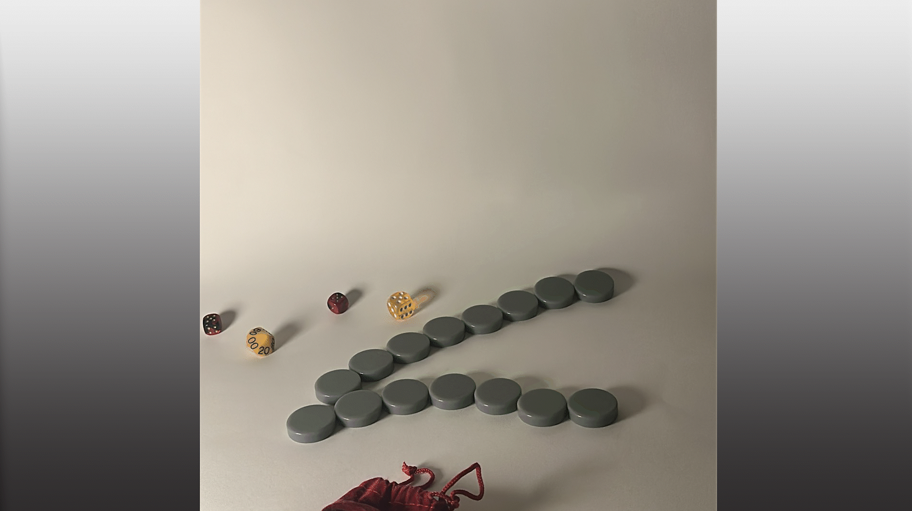

Dice Dogs and Trouble

Dice Dogs and Trouble is a 360 frame stop motion animation that explores kinetic rhythm and tangible storytelling through a dynamic sequence of mixed media objects. The piece features playful choreography, transitioning fluidly through miniature toy cars, coins, dice, and articulated figures to create an engaging visual narrative characterized by smooth frame pacing and deliberate pacing.
Executed entirely through independent direction, shooting, and editing, the production highlights meticulous frame-by-frame manipulation and precise physical staging. The stop-motion workflow relies on careful incremental object placement and seamless post production editing to achieve fluid movement across diverse physical materials and miniature scales.